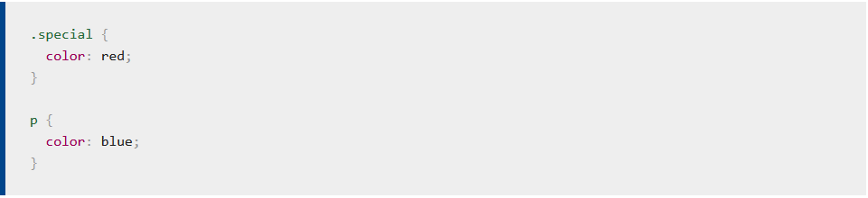
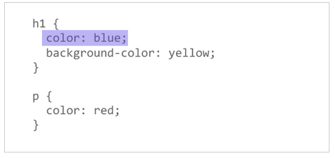

Estructura
Estructura de CSS
Selector:No se puede hablar de CSS sin mencionar los selectores. Un selector es, como determinamos, un elemento de nuestro documento HTML para aplicarle estilo. Si los estilos no se aplican correctamente, es probable que el selector no coincida con lo que crees que debería coincidir.
Cada regla CSS comienza con un selector o una lista de selectores que indican al navegador a qué elemento o elementos deben aplicarse dichas reglas. Todos los siguientes son ejemplos de selectores válidos o listas de selectores.
Ejemplo:

Propiedades y Valores:
En su nivel más básico, el CSS consta de dos componentes básicos:
Propiedades: Identificadores legibles por los humanos que indican qué características de estilo (por ejemplo, font-size, width, background-color) deseas cambiar.
Valores: A cada propiedad especificada se le asigna un valor que indica cómo quieres que cambien esas características de estilo (por ejemplo, lo que quieres que cambie de la fuente, el ancho o el color de fondo).
La siguiente imagen resalta una sola propiedad y valor. El nombre de la propiedad es color y el valor blue.

Tipos de Selectores
Veamos ahora cuáles son los selectores básicos que podemos utilizar en CSS.
- Selector Universal:
Sintaxis: * { atributo:valor; }
Ejemplo:* { color: grey; }/* El estilo se aplicará a todos los elementos de la página*/
- Selector Etiqueta:
Sintaxis: etiqueta { atributo:valor }
Ejemplo: p {color: green;} /* El estilo se aplicará a todos los elementos < p>.*/
- Selector Clase:
Sintaxis: etiqueta { atributo:valor }
Ejemplo: p {color: green;} /* El estilo se aplicará a todos los elementos < p>.*/
- Selecetor Identificador:
El selector identificador utiliza el atributo id para seleccionar un elemento. Solo puede haber un elemento con un id dado en un documento.
Sintaxis: #id { atributo:valor }
Ejemplo: #cent {color: blue;} /* El estilo se aplicará al elemento que tenga el id #cent */
- Selector Descendiente:
Un elemento es descendiente de otro cuando se encuentra entre las etiquetas de apertura y de cierre del elemento padre. Su sintaxis es: selector1 selector2… slectorN. Siendo el selector N el elemento sobre el que se aplica el estilo.
selector1 selector2 selectorN{
propiedad: valor;
}
- Combinación de Selecetores:
La combinación de selectores nos permite dar un estilo a todos los selectores indicados.
selector1, selector2, selector3{
propiedad: valor;
}
- Selector de hijos:
Se usa para seleccionar un elemento que es hijo de otro elemento y se indica mediante el signo “mayor que” (>).
selector1 > selector2{
propiedad: valor;
}
Elementos en Línea
Los elementos en HTML (lenguaje de marcas de hipertexto - Hypertext Markup Language) usualmente son elementos "en línea" o elementos "en bloque". Un elemento en línea ocupa sólo el espacio delimitado por las etiquetas que definen el elemento en línea. El siguiente ejemplo demuestra la influencia de los elementos en línea:
Ejemplo:
El código en HTML:
< p>Este < span>span es un elemento en línea; este fondo se ha coloreado para mostrar el principio y fin de la influencia del elemento en línea< /p>
El código en CSS:
span { background-color: #8ABB55; }
La salida es:
Elementos en Bloque
Los elementos, en HTML (lenguaje de marcas de hipertexto - Hypertext Markup Language) usualmente son elementos "en bloque" o elementos "en línea". Un elemento en bloque ocupa todo el espacio de su elemento padre (contenedor), creando así un "bloque". Este artículo ayuda a explicar lo que esto significa.
Los navegadores suelen mostrar el elemento a nivel de bloque con un salto de línea antes y después del elemento. El siguiente ejemplo demuestra la influencia elementos en bloque:
Ejemplo:
El código en HTML:
< p>Este párrafo es un elemento en bloque; este fondo se ha coloreado para mostrar elemento principal (o padre) del párrafo.
El código en CSS:
p { background-color: #8ABB55; }
La salida es:
Modelo de Cajas
Cada elemento que encontramos dentro de un documento HTML se encuentra contenido en una caja rectangular, la cual cuenta con una serie de propiedades que afectaran el cómo se muestran los elementos.
Al trabajar con un modelo de caja, debemos tener en cuenta que existen dos propiedades principales para definirla, height y width, que definirán el ancho y alto de nuestra caja.
Adicionalmente a estas, tenemos el Margin, Padding y Border que nos brindaran mayor control al momento de organizar los elementos.
Si comparamos ambas imágenes, podremos observar que existe una pequeña variación de tamaño entre una y otra, esto es debido a que el padding y el border están agregando 10 píxeles respectivamente a cada lado de nuestra caja, haciendo que el tamaño de esta se incremente en 40 del tamaño original, siendo ahora de 240px width y 140 px en height.
También podemos observar que ahora nuestra caja se está separando del borde de la pantalla, esto pasa gracias al marginquien está agregando 10 pixeles por lado, para poder entender mejor veamos la siguiente imagen.